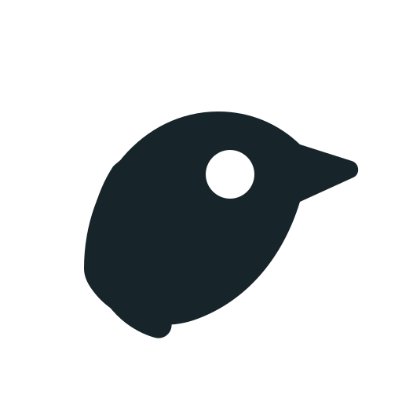
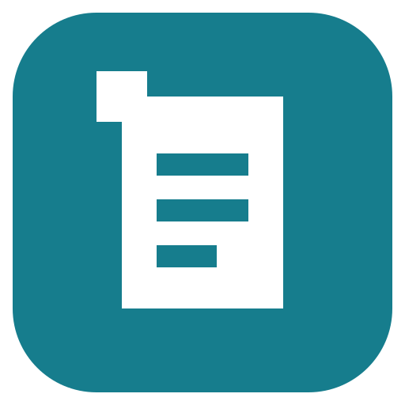
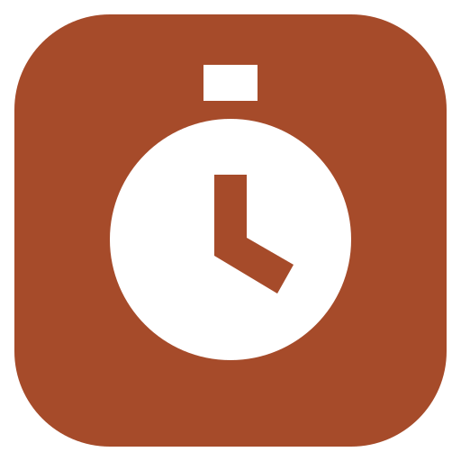
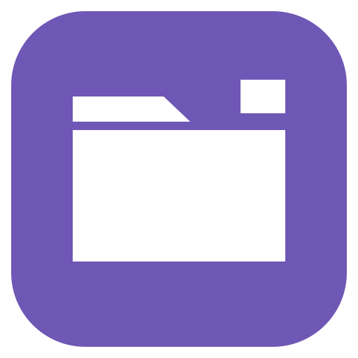

01 / 榫合 · 推荐
多个构件，一套工具。适合长期扩展。
统一母标、几何语言与使用习惯。
让每个工具保留清晰的功能身份。
公司名称待定 · 推荐方向：榫合
多个构件，一套工具。适合长期扩展。
从 utility 出发，直接而简洁。

友好的小帮手，更具个性。



每行依次为 64 / 32 / 16 CSS px。可切换深浅背景、灰度比较。产品图标是静态概念，不是实际 Dock 截图。
母标、关于页、支持入口、语气共享；每款产品有独立名称和功能图形。
系统字体、语义颜色、标准窗口与快捷键。品牌色适量，内容优先。
分层图标经 Icon Composer 适配外观；在目标系统检查 Dock、菜单栏与辅助功能。
深墨 青绿 赭橙 紫